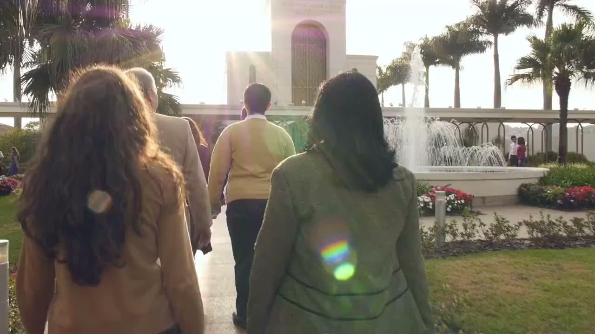

Troba la teva fe a la teva manera. Som aquí per acompanyar-te en el teu camí espiritual.
Som missioners voluntaris de L'Església de Jesucrist dels Sants dels Últims Dies que servim a Espanya.
Dediquem el nostre temps a servir la comunitat, compartir un missatge d'esperança i ajudar els qui busquen enfortir la seva relació amb Déu.
Tots els nostres serveis són completament gratuïts. No importa el teu origen, cultura o idioma — ets benvingut.
Parla amb nosaltresTots els nostres serveis són gratuïts, oferts per voluntaris que volen compartir el que els ha donat pau i propòsit.
Explora les respostes a les preguntes més importants de la vida.
Volem saber de tu. Escriu-nos i et respondrem com més aviat millor.
Som aquí per ajudar-te. No importa quina sigui la teva pregunta, volem escoltar-te i acompanyar-te.